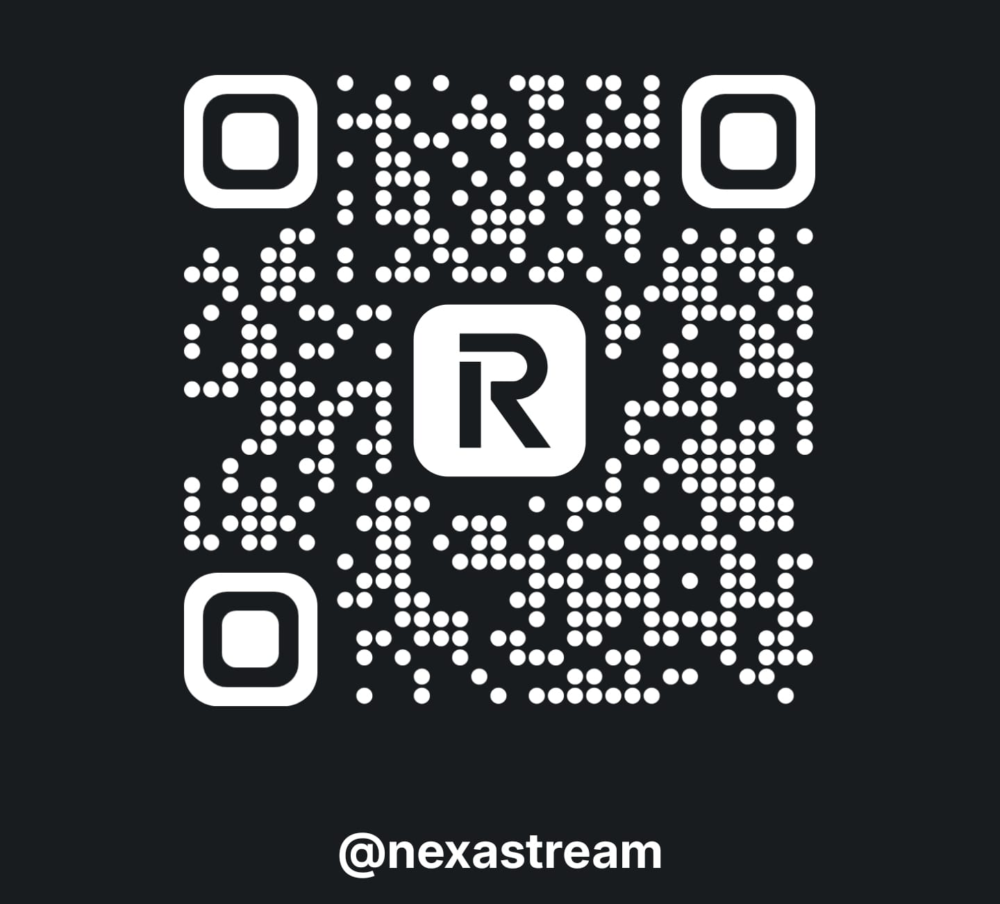
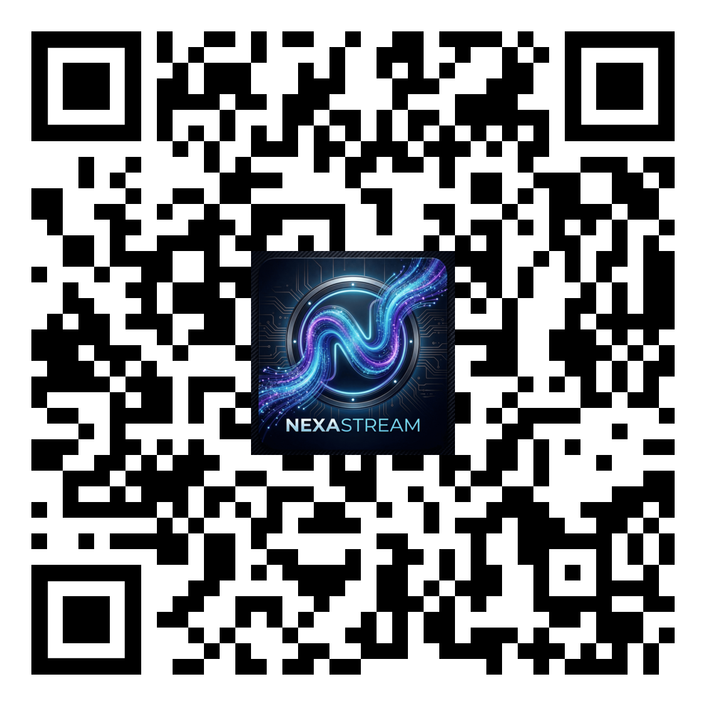

NexaStream
Komunita na prvním místě
Naše vize
NexaStream spouštíme s jasným cílem: poskytnout prvotřídní obsah a exkluzivní sbírky naprosto všem, bez nutnosti kupovat jakékoliv přístupové kódy. Věříme, že komunita má být na prvním místě.
Udržet doplněk v chodu a neustále ho plnit novým obsahem ale stojí nemalé úsilí a prostředky. Váš dobrovolný příspěvek tak nepůjde jen na kávu pro vývojáře, ale přímo podpoří naše uploadery, bez kterých by tento projekt jednoduše neexistoval.
Líbí se vám naše práce? Budeme rádi za vaši podporu.

Příspěvek přes Revolut

Odkaz na tento web
Nebo napřímo: @nexastream